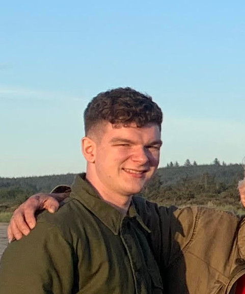

A picture of me at Grayland Beach State Park.
My name is Jacob Lush and I was born on December 23rd, 2000 in Raymond, Washington.
I'm an electrical engineering student at the University of Washington with a concentration
in embedded systems. I love to watch sports, play pickup basketball, and cook.
This page of my portfolio will walk you through my life from beginning to present.
You can click my signature in the top left of the page to return to the home page at any time.
I grew up in Raymond, Washington. Raymond is a rural town with a population of about 3,000. I also
lived in South Bend, Washington which is a nearby town; its population is about 1,800.
Growing up, I would take care of the family animals.
We had a horse, a pig, a dog, two cats, a rabbit, and a coop full of chickens.
In these early years of my life, I developed an interest in technology.
I would spend summers tinkering with programs on my family's computer.
Through books and online resources I taught myself how to record then edit videos,
how to modify photos with image manipulation software, and even how to do some rudementary coding.
I remember building my own computer from parts I had researched
and bought online during my first year of middle school. Having my own computer was really exciting!
 The bridge in Raymond which crosses the Willapa River. From the Raymond Washington Facebook page.
The bridge in Raymond which crosses the Willapa River. From the Raymond Washington Facebook page.
 The South Bend High School Track and Field where I spent countless hours training for sports.
The South Bend High School Track and Field where I spent countless hours training for sports.
I attended South Bend High School from 2013 to 2019. I participated in the school's honor society, key club,
business leadership organization, and KnowledgeBowl trivia club. Meanwhile, I played for the varsity
football, basketball, and track teams. It was a lot of work, but I was able to maintain a 4.0 GPA and graduate
as class valedictorian while taking the most rigorous courses provided by the school. The lack of educational opportunity
as a result of being a rural school was obvious. South Bend High School is located in Pacific County. According to the US Census, Pacific County has
a poverty rate that is 1.34 times that of Seattle. People who live in Seattle are three times more likely to have a Bachelor's degree than those
who live in Pacific County.
At South Bend High School, AP courses were not offered and even some core classes like calculus
were not available either. I saw this as an opportunity to become an independent learner and worker. I bought a calculus
textbook and studied it on my own, taught myself Java using online resources, and tried my best to prepare myself for the future.
It was through these times spent learning on my own where I began to first fall in love with coding.
I was accepted into and began attending the University of Washington Seattle campus in 2019. I joined as part of the College of Engineering's
Direct to College program, from which I chose to study electrical engineering. I went to multiple hackathons. I took interesting social studies, music, and niche coding electives.
Of course, I also went to football, basketball and volleyball games to experience the ups and downs of our sports teams (I finally caught one of the t-shirts
from the t-shirt cannon my senior year)! UW was a place where I felt like I could finally realize my potential as an engineer. However, The culture shock from going to a small town to a university with
tens of thousands of students was significant. Adjusting academically
was just as difficult as adjusting socially. My GPA started at a 2.7 for the first quarter as I struggled in competitive weed out classes. Over the course of my attendance,
I have been able to get my GPA up to a 3.4 and regularly make the Dean's List. From my success, I was able to find opportunities outside of school.
 Husky Stadium during the 2022 Football game versus Michigan State. I definitely did not rush the field after the game.
Husky Stadium during the 2022 Football game versus Michigan State. I definitely did not rush the field after the game.
 My future is an open crossroads.
My future is an open crossroads.
From the connections I made at the University of Washington combined with the coding skills I refined in both personal and academic contexts, I was able to
land an internship at Amazon Web Services in the Web Application Firewall team in the summer of 2021. This was my first experience with professional software.
I failed a lot, but I also learned a lot. It was my introduction to cloud services and digital security.
I have also worked as a coding and robotics tutor for kids. Since then, I have explored several areas of the software, firmware, and hardware industry.
To explore different areas, I have taken, just to name a few, courses in algorithms, computer architecture, web development, data science, and machine learning.
I made an a stove safety IoT (interent of things) device which dealt with custom printed circuit boards, microcontrollers, mobile apps and AWS microservices for my first capstone.
For my second capstone, I am working on a sandbox for malware and security testing (sponsored by BECU). The project will involve the Azure cloud, cyber defense, and a lot of Python and BASH scripting.
Once I graduate, I will be open to working anything from FPGA design to machine learning engineering. I am open to being challenged!